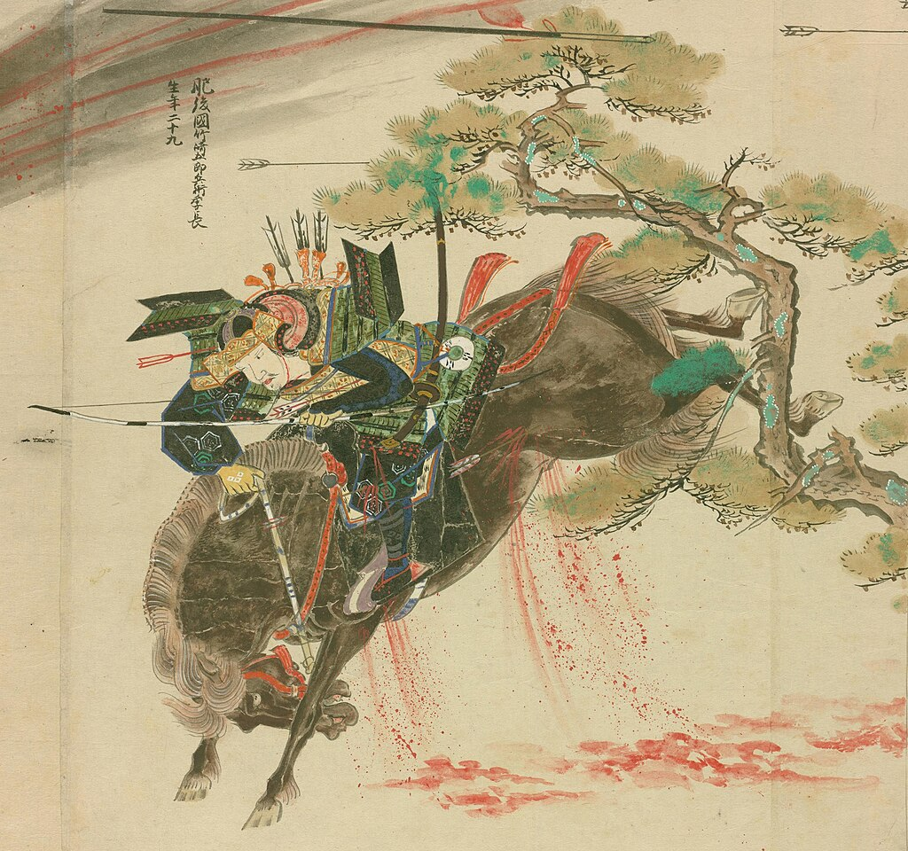
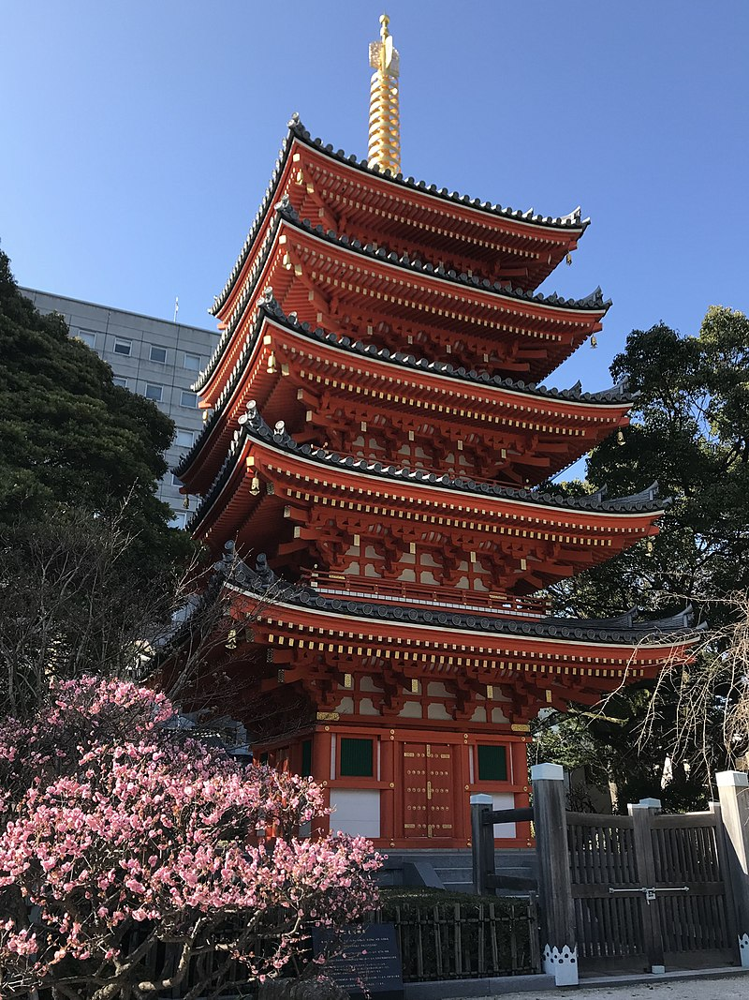

FUKUOKA
About
Fukuoka (Japanese: 福岡市, Fukuoka-shi, [ɸɯ̥kɯoka ꜜɕi] ⓘ) is the sixth-largest city in Japan and the capital city of Fukuoka Prefecture, Japan. The city is built along the shores of Hakata Bay, and has been a center of international commerce since ancient times. The area has long been considered the gateway to the country, as it is the nearest point among Japan's main islands to the Asian mainland. Although humans occupied the area since the Jomon period, some of the earliest settlers of the Yayoi period arrived in the Fukuoka area. The city rose to prominence during the Yamato period. Because of the cross-cultural exposure, and the relatively great distance from the social and political centers of Kyoto, Osaka, and later, Edo (Tokyo), Fukuoka gained a distinctive local culture and dialect that has persisted to the present. Fukuoka is the most populous city on Kyūshū island, followed by Kitakyushu. It is the largest city and metropolitan area west of Keihanshin. The city was designated by government ordinance on April 1, 1972. Greater Fukuoka, with a population of 2.5 million people (2005 census), is part of the heavily industrialized Fukuoka–Kitakyushu zone.Fukuoka (Japanese: 福岡市, Fukuoka-shi, [ɸɯ̥kɯoka ꜜɕi] ⓘ) is the sixth-largest city in Japan and the capital city of Fukuoka Prefecture, Japan. The city is built along the shores of Hakata Bay, and has been a center of international commerce since ancient times. The area has long been considered the gateway to the country, as it is the nearest point among Japan's main islands to the Asian mainland. Although humans occupied the area since the Jomon period, some of the earliest settlers of the Yayoi period arrived in the Fukuoka area. The city rose to prominence during the Yamato period. Because of the cross-cultural exposure, and the relatively great distance from the social and political centers of Kyoto, Osaka, and later, Edo (Tokyo), Fukuoka gained a distinctive local culture and dialect that has persisted to the present.
History
Kublai sent another envoy to Japan in 1279. At that time, Hōjō Tokimune of the Hōjō clan (1251–1284) was the Eighth Regent. Not only did he decline the offer, but he beheaded the five Mongolian emissaries after summoning them to Kamakura. Infuriated, Kublai organized another attack on Fukuoka Prefecture in 1281, mobilizing 140,000 soldiers and 4,000 ships. The Japanese defenders, numbering around 40,000, were no match for the Mongols and the invasion force made it as far as Dazaifu, 15 km (9 mi) south of the city of Fukuoka. However, the Japanese were again aided by severe weather, this time by a typhoon that struck a crushing blow to the Mongolian troops, thwarting the invasion.[11]Kublai sent another envoy to Japan in 1279. At that time, Hōjō Tokimune of the Hōjō clan (1251–1284) was the Eighth Regent. Not only did he decline the offer, but he beheaded the five Mongolian emissaries after summoning them to Kamakura. Infuriated, Kublai organized another attack on Fukuoka Prefecture in 1281, mobilizing 140,000 soldiers and 4,000 ships. The Japanese defenders, numbering around 40,000, were no match for the Mongols and the invasion force made it as far as Dazaifu, 15 km (9 mi) south of the city of Fukuoka. However, the Japanese were again aided by severe weather, this time by a typhoon that struck a crushing blow to the Mongolian troops, thwarting the invasion.[11]
Culture
As of September 2009, the Japanese government estimates the population at 1,384,762,[3] which includes American military personnel and their families. The Okinawan language, called Uchināguchi, is spoken by adults only,[25] but several local groups promote the use of the Okinawan language by younger people.[26] Whereas the northern half of Okinawa Island is sparsely populated, the south-central and southern parts of the island are markedly urbanized—particularly the city of Naha and the urban corridor stretching north from there to Okinawa City. The population distribution is approximately 120,000 in northern Okinawa, 590,000 in central Okinawa and 540,000 in southern Okinawa. It has a high population density of 1,014.93/km2.[27]As of September 2009, the Japanese government estimates the population at 1,384,762,[3] which includes American military personnel and their families. The Okinawan language, called Uchināguchi, is spoken by adults only,[25] but several local groups promote the use of the Okinawan language by younger people.[26] Whereas the northern half of Okinawa Island is sparsely populated, the south-central and southern parts of the island are markedly urbanized—particularly the city of Naha and the urban corridor stretching north from there to Okinawa City. The population distribution is approximately 120,000 in northern Okinawa, 590,000 in central Okinawa and 540,000 in southern Okinawa. It has a high population density of 1,014.93/km2.[27]
Architecture
It was first built in the 16th century, and the structure of the gate is similar to that of Chinese three-bay turret gates, and is covered with a red tiled hip roof. The four Hanzi framed on the gate - Shu, rei, no, and kuni, which mean 'Land of Propriety', were added to the gate long after it was built. It was also called Shurimon (首里門, "Shuri gate") and Wī nu Aijō (上ぬ綾門, "Beautiful gate at the upper part") in Okinawan.[1][2] The gate reflects strong Chinese influence, alongside indigenous religious traditions.It was first built in the 16th century, and the structure of the gate is similar to that of Chinese three-bay turret gates, and is covered with a red tiled hip roof. The four Hanzi framed on the gate - Shu, rei, no, and kuni, which mean 'Land of Propriety', were added to the gate long after it was built. It was also called Shurimon (首里門, "Shuri gate") and Wī nu Aijō (上ぬ綾門, "Beautiful gate at the upper part") in Okinawan.[1][2] The gate reflects strong Chinese influence, alongside indigenous religious traditions.It was first built in the 16th century, and the structure of the gate is similar to that of Chinese three-bay turret gates, and is covered with a red tiled hip roof. The four Hanzi framed on the gate - Shu, rei, no, and kuni, which mean 'Land of Propriety', were added to the gate long after it was built. It was also called Shurimon (首里門, "Shuri gate") and Wī nu Aijō (上ぬ綾門, "Beautiful gate at the upper part") in Okinawan.[1][2] The gate reflects strong Chinese influence, alongside indigenous religious traditions.
